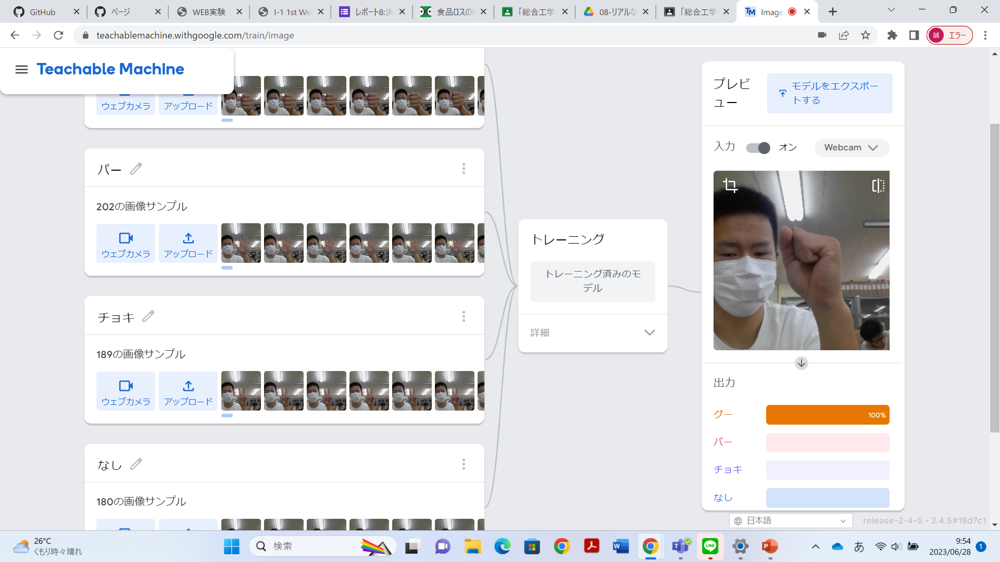
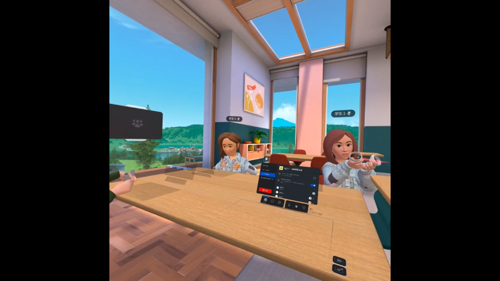

第2週目
2-1 １週目のレポートをHTMLで作る
１週目のレポート
1.内容
レポートの作り方を学んだ。
作り方の手順に沿って、画像をアップロードし、レポートを修正、変更した。
2.感想
パソコンでプログラムのようなものを触るのは初めてだったので、色々手間取った。
途中からは慣れてきたので、スムーズにレポートを作ることができた。
2-2 機械学習体験

1.内容
Machine Learningという人工知能技術を体験できるウェブサイトで機械学習モデルを作成する手順を学んだ。
画像でグー、チョキ、パーを判別する機械学習モデルを作成し、体験した。
2.感想
カメラに写る手の画像がグー、チョキ、パーに判別されていて衝撃的だった。
意外と人工知能の機械学習のモデルを簡単に作ることができることを知った。
グーをパーと認識している様子が面白かった。
2-3 VR（バーチャルリアリティー：Virtual Reality）会議室の体験

1.内容
ないようないよう
2.感想
かんそうかんそう